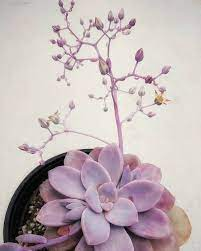
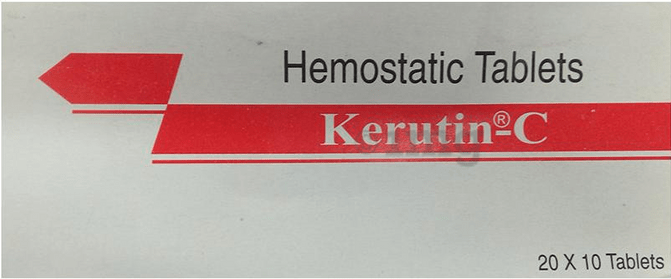

Kuroda Chika nacio en la prefectura de Saga en el año 1884. Estudio en la escula Normal de Chicas de Saga en la división de ciencias Trás graduarse empezo como ayudante de profesor en la Escuela Superior de Mujeres de Tokio.
En 1913 la Univeridad Imperial de Tohou ,en la ciudad de Sendai, se conviertio en la primera universidad imperial en aceptar mujeres. Kuroda fue acpetada en el departamento de química y su mentor Majima Riko la transmitio el interes por la Quimica Orgánica.
Se convirtío en la primera mujer licenciada en ciencia de Japón.
Murió de una enfermedad cardíaca en el año 1967
Realizó multiples investigaciones como:
Descubrió multiples pigmentos naturales de Asango del japon, soja negra o L. erythrorhizon obtenido de la planta Murasaki
Desarrolló el medicamento antihpertensivo "Kerutic C"
He elegido a esta persona porque quería mostrar a algun cintífico de Japón, un país que me gusta mucho.Buscando encontré a Kuroda e investigué un poco sobre ella. Al ver no solo sus logros, sino su papel en la representacion de las mujeres en la ciencia, decidí escogerla.
Inicio